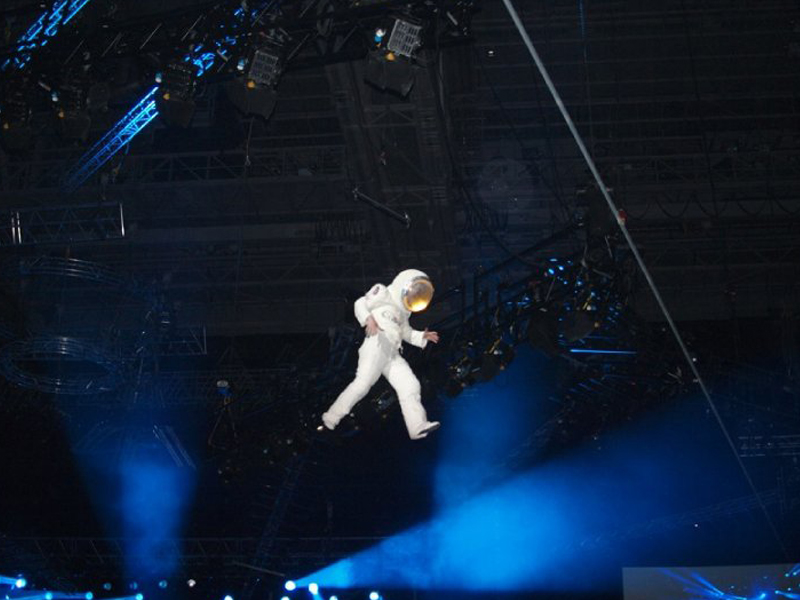
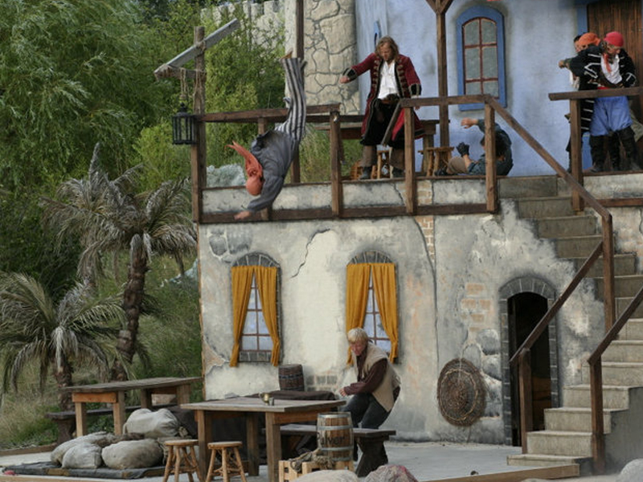
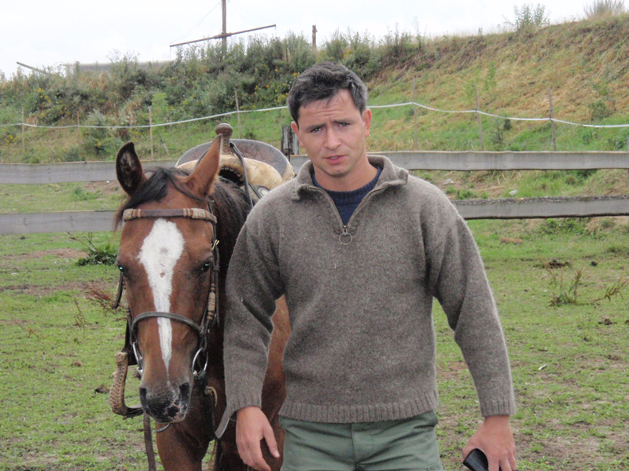

Stunt
Einblicke in Stunt, Stage Combat und Schauspiel. Für Gruppen, Schulen oder Produktionen – von einzelnen Choreografien bis zu ganzen Szenen.
Mehr lesen
In meinem Workshop-Stunt erhalten Sie intensive Einblicke in Stunt, Stage Combat und Schauspiel. Je nach Engagement erarbeiten wir kleinere bis große Choreografien für Bühnenstücke, Tanzaufführungen und Filmszenen – bis hin zu ganzen Bühnenstücken. Auch Material für ein Demoband kann entstehen.
Schulen und Klassen können den Workshop zum Beispiel für Sporttage oder Klassentreffen buchen. Ich komme persönlich zu Ihnen oder Sie kommen zu mir. Ein Stuntworkshop fördert Gesundheit, Fitness, Sportlichkeit, Koordination und weitere körperliche Fertigkeiten.
An wen richtet sich dieser Workshop?
Der Workshop richtet sich in erster Linie an Schauspielerinnen und Schauspieler, Laiendarsteller, Theaterinitiativen, Theater, Vereine, Kampfsportschulen und Schülerinnen und Schüler. Jeder, der Spaß und ein ernstes Interesse am Lernen mitbringt, ist willkommen.
Was lernen Sie?
- Stunt, Film- und Theaterkampf
- Schauspiel, Reaktion, Stretching und Pantomime
- Fallschule und Körperbeherrschung
- Turnen und Artistik
- Stock- und Schwertkampf, Fechten-Basics
- Theatersport, Kampfsport und Bodystunt
- Stürze, Sprünge und authentisches Spiel vor der Kamera
Das Programm vermittelt Techniken der Fallschule, Körperbeherrschung, Pantomime sowie Film- und Theaterkampf. Sie lernen, komplexe Abläufe sicher umzusetzen, Stürze authentisch zu verkaufen und sich richtig vor der Kamera zu positionieren.
Was ist mitzubringen?
Bequeme Sportkleidung, hallentaugliche Sportschuhe und gute Laune. Für Gruppen über fünf Personen außerhalb Dresdens ist eine Sporthalle ideal; Hof oder Außenfläche sind ebenfalls möglich. Für Einzelpersonen oder kleine Gruppen steht bei schlechtem Wetter eine Halle in Dresden zur Verfügung. Alles weitere Material wird gestellt.
Workshop-Wochenende: Action-Reiter
Es besteht die Möglichkeit, an einem Workshop-Stuntreiter-Wochenende teilzunehmen. Dieses spezielle Format findet in den Monaten März, April, Oktober und November statt und richtet sich an erfahrene Reiter oder Stuntleute, die sich im Bereich Reiten, Stunt oder Action-Reiten weiterentwickeln möchten. Grundregeln und Elemente der Stuntreiterei werden praktisch umgesetzt; Voltigieren ist ein wesentlicher Bestandteil. Der Workshop findet in Leuthen statt. Pferde und Unterkunft stehen für eine begrenzte Anzahl Teilnehmender zur Verfügung; Zelten ist möglich, Strom, Wasser und sanitäre Einrichtungen sind vorhanden.


